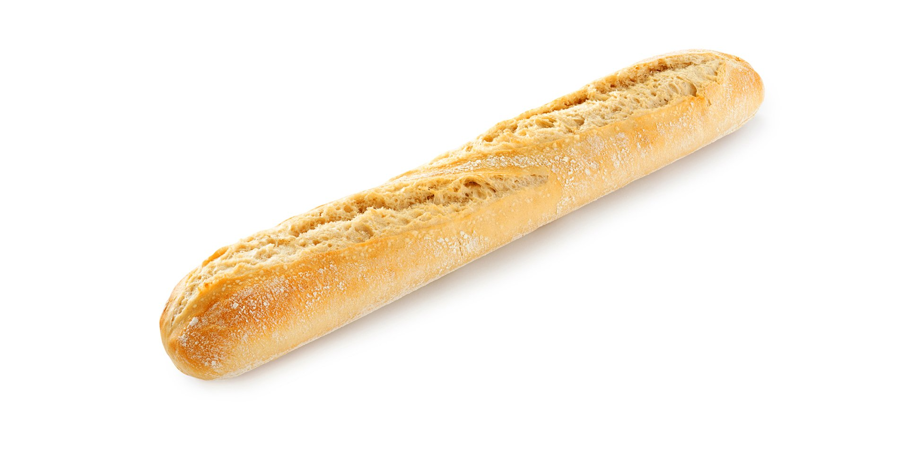

Elige tu pan
Ningún pan cumple todo
Quita algún filtro o cuéntanos qué necesitas: si no lo tenemos, quizá podamos hacerlo.
Has visto 13 de 122 panes
Prototipo: esta muestra tiene 13 panes. En producción se cargan de 12 en 12.
Panes
Más de 200 referencias de pan precocido congelado. Búscalas por tu tipo de negocio, por el momento en que las sirves o por familia.

Inspiración
Ideas para servir y vender más pan: recetas, momentos de consumo y guías prácticas.

Sobre OKIN
Panaderos en Zumaia desde 1994. Capacidad industrial y un equipo que trabaja contigo.

Ningún pan cumple todo
Quita algún filtro o cuéntanos qué necesitas: si no lo tenemos, quizá podamos hacerlo.
Has visto 13 de 122 panes
Prototipo: esta muestra tiene 13 panes. En producción se cargan de 12 en 12.
0 de 4 para comparar